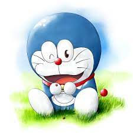

pallavi
pallavi,innovator
Doraemon is a Japanese manga series written and illustrated by Fujiko F. Fujio. The manga was first serialized in December 1969. Its chapters were collected in 45 tankōbon volumes published by Shogakukan from 1974 to 1996. The story revolves around an earless robotic cat named Doraemon, who travels back in time from the 22nd century to aid a boy named Nobita Nobi.It is the most famous cartoon that no matter who watches no mentioned about age.

click hereto visit the file